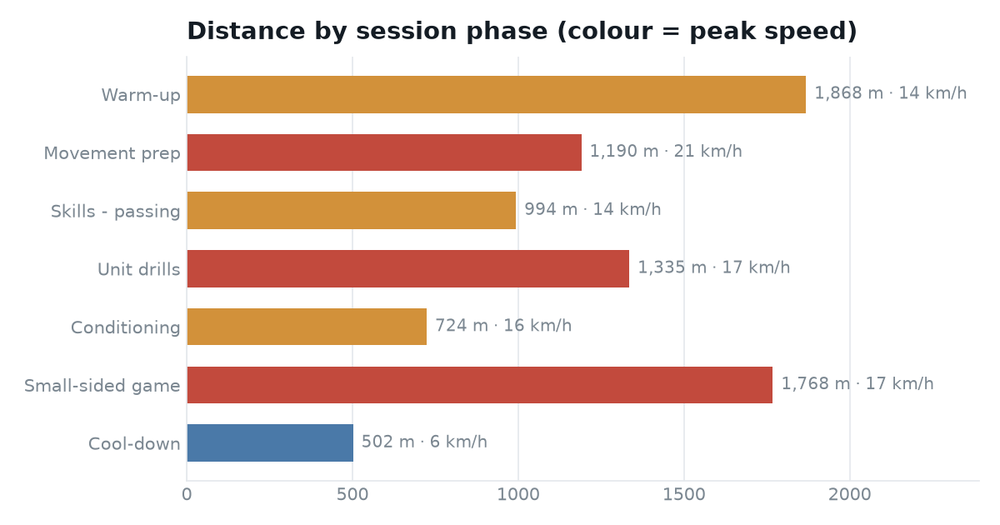

Session-Phase Demand Profile
The same real session, broken down by coaching phase — so staff can see exactly where the physical demand sits across a session and balance the training week around it.
The question
A session total tells you how much an athlete did. It doesn’t tell you when — whether the load came from the warm-up, the conditioning block, or a hard small-sided game at the end.
Catapult tags every sample with a session phase. This project uses that flag to split the session into its coaching blocks and report distance and peak speed for each — the view a strength & conditioning coach needs to structure the week and avoid stacking high-intensity blocks.
Where the demand sat
Two blocks dominate the running: the warm-up (1,868 m of continuous movement) and the small-sided game (1,768 m). But distance alone is misleading — colouring each bar by peak speed shows the small-sided game and movement prep were where the high-velocity efforts happened, even though the warm-up covered more ground.

What I did
- Segmented the feed on the phase flag in Power Query, handling the raw export’s structure on import.
- Wrote DAX measures for distance (from the odometer) and peak speed per phase, so the numbers recompute automatically as filters change.
- Designed a single-page read — a coach sees the demand distribution in seconds, then can drill into any phase.
The underlying segmentation is the same logic proven in the Python session report, re-expressed in a BI tool so non-technical staff can interact with it directly.
Peak speed of 21.0 km/h came in movement prep, not the game — a reminder that warm-up design already exposes athletes to near-maximal velocity, which matters for hamstring-injury risk management.
Why it matters
Phase-level reporting turns a single number into a coaching conversation. It shows whether a session delivered its intended stimulus, where to trim volume, and how to sequence blocks so high-speed exposure is deliberate rather than accidental.
Skills demonstrated: Power Query data shaping, DAX measure design, grouping/aggregation logic, and information design for a non-technical audience.